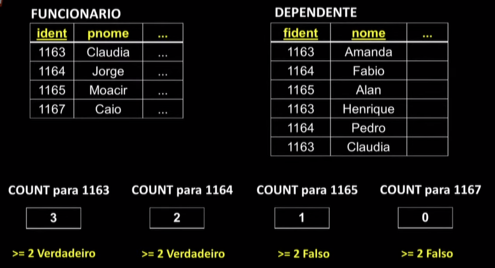
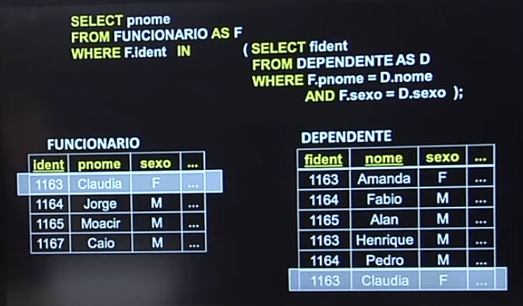
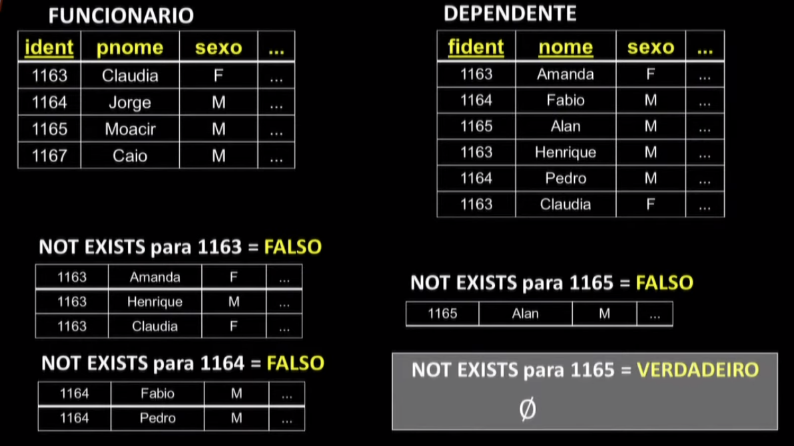

Disciplinas
-
BANCO DE DADOS-T01-2024-1 Concluído
Materiais
Vídeo 2 - Bancos de Dados - Aula 15 - Linguagem de consulta – SQL Parte III. sendProfessor ministrante: Sarajane Marques Peres.
Conteúdo
Linguagem de consulta – SQL.
SQL.
Esquema para o modelo Relacional do contexto didático: EMPRESA.
FUNCIONARIO (ident, nome, sobrenome, endereco, dtnasc, salario, sexo, supident, dnumero)
DEPENDENTE(fident, nome, dt_nasc, sexo, relacionamento)
DEPARTAMENTO(numero, nome, gident, dtinicio)
LOCALIZACOES(dnumero, localizacao)
PROJETO(numero, nome, localizacao, dnumero)
TRABALHA_EM(pnumero, fident, horas)
Algumas simplificações nos nomes de variáveis foram realizadas para facilitar o uso delas nas consultas. A chave primária, em cada relação, está sublinhada.
SQL-Structured Query Language:- Linguagem de banco de dados com recursos para definição de dados, consulta aos dados e atualização de dados.
- Permite especificar restrições que devem ser impostas aos dados possibilitando a implementação da integridade e segurança da informação armazenada.
SQL é uma linguagem padrão para SGBDs comerciais. Há um padrão, estabelecido pelo American National Standards Institute (ANSI) e pela International Standards Organization (ISO).
- Sugestões de consulta para implementações comerciais:
- https://www.postgresql.org/docs/9.0/static/sql.html
- https://www.postgresql.org/docs/9.0/static/bookindex.html
- http://dev.mysql.com/doc/refman/5.7/en/sql-syntax.html
- http://dev.mysql.com/doc/refman/5.7/en/literals.html
Consultas Aninhadas e Sub-consultas.
- Existem consultas cuja implementação envolve o uso de informações retornadas por outras consultas.
- Em alguns casos, essa demanda por ser resolvida por consultas aninhadas, ou Sub-consultas.
- Sub-consultas são blocos SELECT-FROM-WHERE especificados dentro de uma cláusula WHERE, de forma adequada.
Exemplos:
SELECT ...
FROM ...
WHERE ... ... (SELECT
🡹 FROM ...
| WHERE ...);
|
Uma maneira de conectar as duas consultas
Consulta 31: Recupere os nomes de todos os funcionários que possuem dois ou mais dependentes.
SELECT nome,
FROM FUNCIONARIO
WHERE (SELECT COUNT(*)
FROM DEPENDENTE
WHERE ident = fident) >= 2;

Consulta 32: Liste os nomes dos funcionários que possuem salários maiores do que os salários de todos os funcionários do departamento 5.
SELECT nome
FROM FUNCIONARIO
WHERE salario > ALL (SELECT salario
FROM FUNCIONARIO
WHERE dnumero = 5);
Consulta 33: Encontre os nomes de cada funcionário que possui um dependente com o mesmo nome que ele e do mesmo sexo que o dele.
SELECT nome
FROM FUNCIONARIO AS F
WHERE F.ident IN (SELECT fident
FROM DEPENDENTE AS D
WHERE F.nome = D.nome
AND F.sexo = D.sexo);
ou
SELECT nome
FROM FUNCIONARIO AS F
WHERE EXISTS (SELECT *
FROM DEPENDENTE AS D
WHERE F.ident = D.ident
AND F.nome = D.nome
AND F.sexo = D.sexo);

Consulta 34: Recupere os nomes dos empregados que não possuem dependentes.
SELECT pnome
FROM FUNCIONARIO
WHERE NOT EXISTS (SELECT *
FROM DEPENDENTE
WHERE ident = fident);

Sub-consultas versus UPDATE.
UPDATE FUNCIONARIO
SET salario = salario * 1,1
WHERE dnumero IN (SELECT numero
FROM DEPARTAMENTO
WHERE gident = '1163');
Sub-consultas versus DELETE.
DELETE FUNCIONARIO
WHERE dnumero IN (SELECT numero
FROM DEPARTAMENTO
WHERE gident = '1163');
Linguagem de consulta - SQL Parte III.
Estes slides estão baseados na bibliografia: